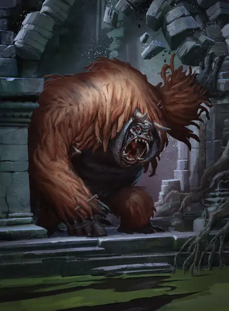

Барлгура
Barlgura
Большое Исчадие (Демон), Хаотичное Злое

Класс Защиты 15 Инициатива +2 (12)
Хиты 85 (10к10 + 30)
Скорость 40 футов, Лазания 40 футов
| мод | спас | ||
|---|---|---|---|
| СИЛ | 18 | +4 | +4 |
| ЛОВ | 15 | +2 | +5 |
| ТЕЛ | 16 | +3 | +6 |
| мод | спас | ||
|---|---|---|---|
| ИНТ | 7 | −2 | −2 |
| МДР | 14 | +2 | +2 |
| ХАР | 9 | −1 | −1 |
Сопротивление урону Огонь, Холод, Электричество
Иммунитеты Яд; Отравленный
Чувства Тёмное зрение 120 футов, пассивное Восприятие 15, Слепое зрение 30 футов
Языки Бездны, Телепатия 120 фт.
Опасность 5 (1 800 опыта; БВ +3)
Особенности
Восстановление демона. Когда барлгура умирает за пределами Бездны, его тело превращается в лужу ихора и в тот же миг заново возрождается со всеми Хитами где-то в Бездне.
Действия
Мультиатака. Барлгура совершает одну атаку Терзающим укусом и две атаки Молотящим ударом.
Терзающий укус. Бросок рукопашной атаки: +7, досягаемость 5 фт. Попадание: 11 (2к6 + 4) Колющего урона плюс 13 (2к12) Психического урона.
Молотящий удар. Бросок рукопашной атаки: +7, досягаемость 5 фт. Попадание: 9 (1к10 + 4) Дробящего урона. Если цель — существо Большого размера или меньше, она Опрокидывается.
Сотворение заклинаний. Барлгура сотворяет одно из следующих заклинаний, не нуждаясь в Материальных компонентах (заклинательная характеристика — Мудрость, Сл спасброска заклинаний 13):
2/день каждое: Маскировка, Невидимость
1/день каждое: Воображаемый убийца, версия 6-го уровня, Опутывание
Бонусные действия
Прыжок. Барлгура может прыгнуть на расстояние до 40 футов, потратив 10 футов перемещения.
Бонус мастерства +3
Среда обитания Бездна
Сокровища Любые
Барлгура
Демон инстинктов и первобытной жестокости
Барлгуры — демоны, которые воплощают в себе жестокость и инстинктивные порывы убийц. Они безжалостно охотятся на существ, которые посмели вторгнуться в дикие пустоши Бездны, места, куда их призвали злые маги, или на любую другую территорию под их контролем. В местах обитания барлгур полно демонических символов и ужасающих свидетельств совершённых ими убийств.
Если охота сулит богатую добычу, барлгуры готовы сотрудничать с другими демонами и даже представителями своего вида. Когда же в их угодьях недостаточно пищи, эти Исчадия начинают сражаться друг с другом и могут в процессе разорить огромные территории.
Внешность барлгур может быть различной, но они всегда обладают крепким телосложением, а сильные руки позволяют им быстро лазать и наносить сокрушительные удары. Когда грубой силы недостаточно для победы, эти существа могут воспользоваться демонической магией, чтобы создать пугающие иллюзии и цепкие лозы. В большинстве своём они напоминают кошмарных обезьян, а у некоторых присутствуют гипертрофированные черты хищников, характерные для мест обитания этих демонов. Многие барлгуры носят на теле трофеи прошлых охот.